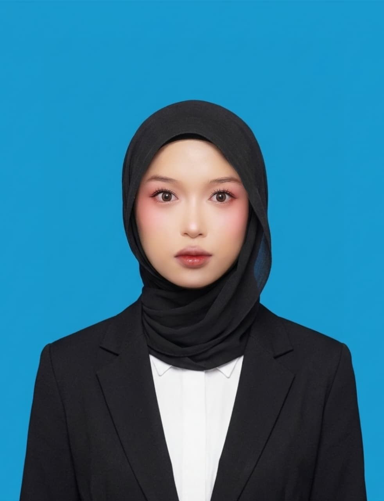

I build
Informatics Management (D3) at Politeknik Astra. I build web and mobile apps, and my latest project is a real-time vision system that reads four industrial cameras on an NVIDIA Jetson Orin Nano.

I have completed my D3 in Informatics Management at Politeknik Astra. I build web and mobile apps with Next.js, ASP.NET, React, React Native, Laravel and Spring Boot, backed by SQL Server, MySQL and Oracle databases. For my final project I designed and deployed a real-time computer vision system on an edge device to monitor timing belt condition at an automotive manufacturing company. I also do the analysis work before coding: gathering requirements and modeling business workflows.